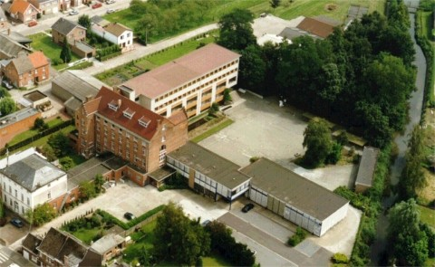

{kind=link}
“Allen één, het STC. We doen aan Music for Life mee.”
Gemaakt op woensdag 3 januari 2018 10:45


Deze pagina bundelt alle foto's en artikels die ooit verschenen zijn op onze webstek www.sint-teresiacollege.be sinds de start op maandag 21 september 1998 tot en met vrijdag 31 augustus 2018.
Ben je oud-leerling(e) uit deze periode?
Dan kun je het fotoalbum met de foto's uit de cd-rom (of dvd), die je bij je afscheid gekregen hebt, online bekijken en eventueel downloaden.
Een bijzonder woord van dank aan onze voormalige webstekredacteur, Geert Defauw, voor zijn inhoudelijke bijdrage en de talrijke foto's (>20900)!
Hieronder alvast een greep uit het, met vele mooie momenten, gevulde archief.
Zin in meer? Kies in het linkermenu eerst een schooljaar en vervolgens in het topmenu één van de items.

Over het verleden willen we niet te veel mijmeren, maar we beseffen dat de technische middelen razendsnel geëvolueerd zijn. Waar is de tijd van de cassettes, de dia's en die ene computer (een Commodore 64)? (...)

De hele manifestatie was eigenlijk al maanden vooraf in een vast scenario gegoten. Een werkgroep bestudeerde minutieus alle aspecten van zo'n speciale dag. Wat kunnen we onze leerlingen aanbieden? Wat is haalbaar? Waaraan hebben ze iets? Hoe zorgen we voor sponsoring? Allemaal vragen die een antwoord vereisten... Maar het lukte, en hoe! Vooraf konden onze leerlingen kiezen uit een resem workshops. Uiteraard moest een en ander wat afgesteld worden, want niet iedereen kon op hetzelfde moment dezelfde activiteit uitvoeren. (...)

Na koortsachtig beraad en geheime bijeenkomsten waren ze uiterst fier toen niemand minder dan Linde Merckpoel, oud-leerling en ‘sidekick’ van Tomas De Soete tijdens het ochtendblok op Studio Brussel, bereid gevonden werd om uitdager van dienst te zijn. Vier enthousiastelingen trokken op een woensdagmiddag naar Antwerpen en bedachten leuke filmpjes in het fijne gezelschap van de immer sympathieke Linde.
Op dinsdag 17 maart werden alle leerlingen en leerkrachten verrast op een grootse startshow met onze eigen Geena Lisa en Sergio, in de gedaante van Ester en Joppe. (...)
 Het werd een mooie dag, die donderdag 24 juni. Niet alleen waren de proefwerken achter de rug, er zouden ook enkele leerlingen in de bloemetjes gezet worden. Wie vorig jaar het eerste gala meemaakte, wist natuurlijk dat heel wat verdienstelijke leerlingen werden genomineerd. Uit een bepaalde categorie werd dan één winnaar bekroond en gehuldigd. (...)
Het werd een mooie dag, die donderdag 24 juni. Niet alleen waren de proefwerken achter de rug, er zouden ook enkele leerlingen in de bloemetjes gezet worden. Wie vorig jaar het eerste gala meemaakte, wist natuurlijk dat heel wat verdienstelijke leerlingen werden genomineerd. Uit een bepaalde categorie werd dan één winnaar bekroond en gehuldigd. (...)